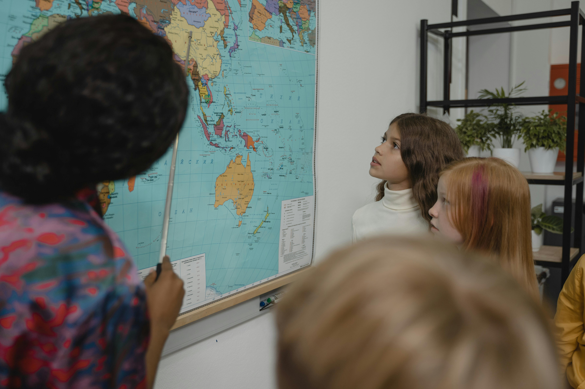

O Estudo é o futuro
Em 2024, 1,2% das crianças e adolescentes (até 17 anos) estavam fora da escola, totalizando 619 mil. Já em relação ao analfabetismo, a taxa para pessoas de 15 anos ou mais foi de 5,3% em 2024, atingindo 9,1 milhões de pessoas. Nosso papel é mudar essa história.
Nossos Projetos Ativos
Clube do Livro Aberto a Comunidade
Semanalmente, haverá um clube do livro, onde todos poderão participar. Cada um escolhe um livro e discute sobre ele em um dia na semana. Livros clássicos como Drácula e Franstein para incentivar a leitura e aprendizado de vocabulário, estarão presentes!
Reforço Escolar
As Crianças e adolescentes de todas as unidades terão reforço escolar e ajuda com aprendizado fora de aula. Dessa forma, consolidando conhecimento para melhor usá-lo futuramente, no enem ou qualquer instituição acadêmica.
Auxílio Enem
Se o indivíduo desejar ingressar em uma faculdade, teremos cerca de 200 cursos com video-aulas, livros e materais de qualidade. Com o aprendizado e foco total no vestibular, podendo se sobressair nas notas e passando facilmente em uma universidade de qualidade.
Como você pode fazer a diferença
Seja um Voluntário
Quer Ajudar? Seu tempo, dedicação e carinho podem ser recursos valiosos para nós. Você pode:
- Ler para as Crianças
- Ajudar no reforço escolar e, se for professor(a), dar aula.
- Ajudando na manutenção do Ambiente: Limpar, organizar, gestão dos jovens, etc.
- Doando Livros e/ou ajudando na organização da biblioteca.
Realize uma doação
Sua contribuição financeira ou de materiais nos permite comprar novos livros, lanches para as crianças e manter nossos espaços funcionando.
Chave PIX (CNPJ): 12.345.678/0001-99
Inscreva-se:
Se Inscreva e faça a diferença, contamos com sua ajuda!
Inscreva-se